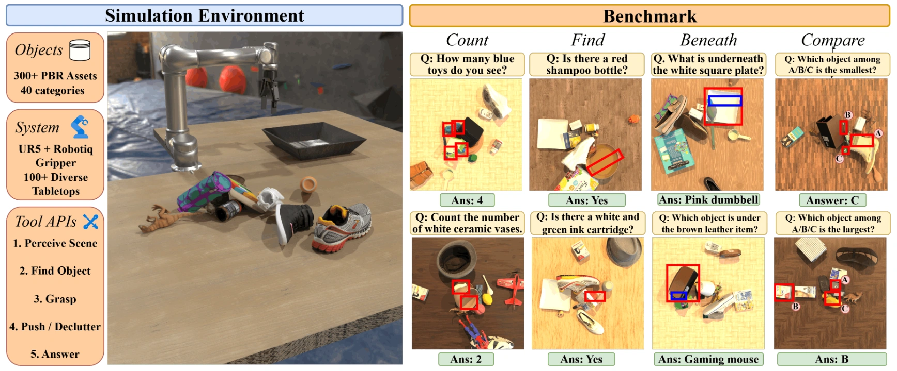
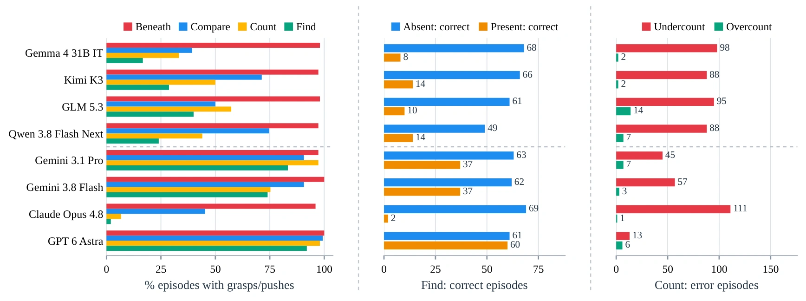
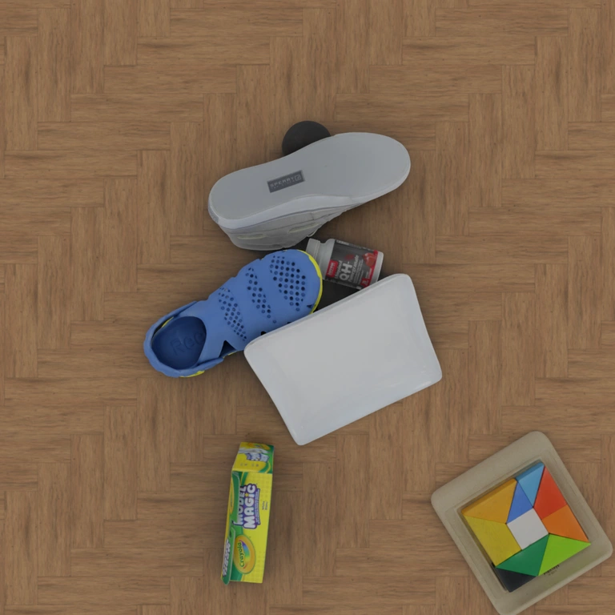

MG-VQA: Manipulation Grounded
Visual Question Answering with VLMs
NVIDIA
Abstract
Vision-language models (VLMs) have shown promising spatial reasoning capabilities from static visual inputs, where the evidence needed to answer a question is available in the provided views. However, in cluttered environments, answer-relevant evidence may be occluded rather than absent: an object may lie beneath a pile, be covered by another object, or have identifying information facing away from the camera. Answering such questions requires physical interaction to reveal the hidden evidence. We formalize this setting as Manipulation-Grounded Visual Question Answering (MG-VQA), where an agent answers a question about an initially cluttered scene by using manipulation as an intermediate evidence-gathering operation. We introduce MG-VQA-Bench, comprising 600 human-verified questions across four spatial reasoning tasks, and evaluate it in a cluttered tabletop interactive environment. Eight VLMs are evaluated under three levels of environment access: Direct (image only), Perception (pointing, segmentation, and scene graphs), and Manipulation (perception, grasping, and pushing). Across all models, Direct and Perception achieve average success rates of 36.2% and 37.6%, respectively, only slightly above an image-blind chance baseline of 32.7%. In contrast, Manipulation raises average success to 56.8% (40.8–83.0% across models). Stronger tool-calling VLMs, GPT 6 Astra (83.0%) and Gemini 3.8 Flash (69.3%), search persistently and re-ground after unsuccessful interactions, while weaker models often answer without gathering sufficient evidence or stop prematurely after failed actions. Our results highlight the need for VLM agents that use manipulation for persistent, physically grounded evidence gathering and recovery.
MG-VQA-Bench and MG-VQA-Sim

Available tools
| Tool | Input | Information or action |
|---|---|---|
perceive_scene | Current scene | Returns a scene graph of visible objects, descriptions, points, and spatial relations. |
find_object | A 2D point | Returns the segmentation mask of the object at the requested point. |
grasp | Grounded object mask | Attempts to grasp the object and relocate it to the clearing basket. |
push | Grounded object and direction | Executes a directional push to move clutter and expose the scene. |
answer_question | Answer; a point for a positive Find answer | Submits the answer and ends the episode. |
Results
Direct mode uses only the initial image. Perception mode adds scene-understanding tools. Manipulation mode also enables grasping and pushing. We evaluate all VLMs in these three modes to measure the VQA performance improvements enabled by incremental scene-interaction capabilities and examine how their behavior changes with the broader range of actions available through a physical manipulator.
Across the eight models, average success increases from 36.2% in Direct and 37.6% in Perception to 56.8% in Manipulation. GPT 6 Astra achieves 83.0% in Manipulation mode.
| Model | Direct | Perception | Manipulation |
|---|---|---|---|
| Gemma 4 31B IT | 32.7 | 35.3 | 44.3 |
| Kimi K3 | 36.5 | 40.7 | 56.7 |
| GLM 5.3 | 30.2 | 32.5 | 40.8 |
| Qwen 3.8 Flash Next | 38.7 | 35.2 | 54.0 |
| Gemini 3.1 Pro | 40.7 | 40.5 | 64.5 |
| Gemini 3.8 Flash | 42.2 | 40.3 | 69.3 |
| Claude Opus 4.8 | 31.3 | 34.2 | 41.5 |
| GPT 6 Astra | 37.0 | 42.5 | 83.0 |
Astra averages 3.9 manipulation calls per question, compared with 0.9–2.9 for the other models. Figure 3 shows manipulation use alongside Find and Count outcomes.

Example Tasks
Can you count the red tin cans for me?
Open answer: an integer (no answer options).
Top-down observation

I need to locate visible cans and the objects concealing the central pile.
Success — GPT 6 Astra switches to pushing after a failed plate grasp, then clears two shoes and rechecks the scene. It correctly counts three red tin cans.
BibTeX
@misc{bhat2026mgvqamanipulationgroundedvisual,
title={MG-VQA: Manipulation Grounded Visual Question Answering with VLMs},
author={Vineet Bhat and Mikaela Angelina Uy and Siyi Chen and Chan Hee Song and Alex Zook and Xuning Yang and Stan Birchfield and Valts Blukis and Jonathan Tremblay},
year={2026},
eprint={2608.17129},
archivePrefix={arXiv},
primaryClass={cs.CV},
url={https://arxiv.org/abs/2608.17129},
}